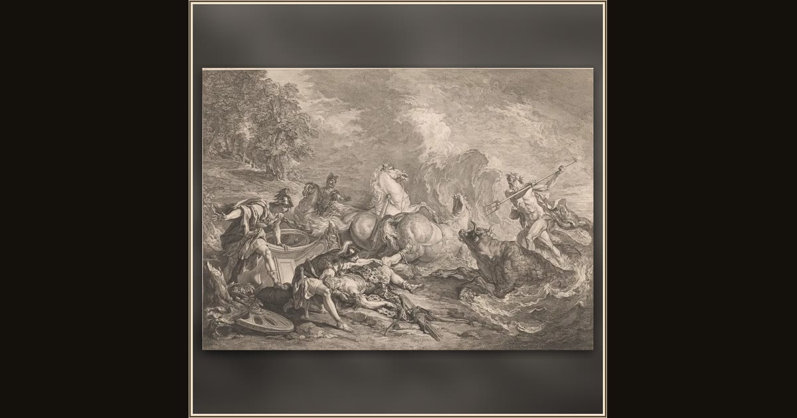

Dood van Hippolytus (La mort d'hippolyte)
Charles Nicolas Cochin (II); publisher Gaspard Duchange · 1735 · rijksmuseum
A bull rises from the surf beside a trident-bearing sea god, the chariot horses rear, and Hippolytus lies thrown among the wreckage, as the messenger describes the monster from the wave (1210–1214). Explore its place in Euripides's Plays, Hippolytus, line 1200